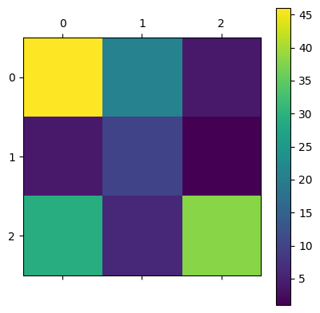
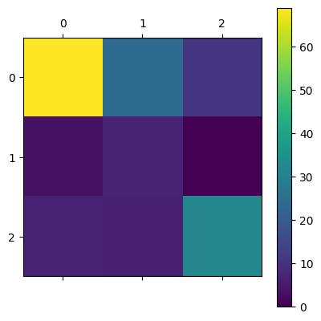

UTS - Klasifikasi terhadap data abstrak prodi teknik informatika pta.trunojoyo.ac.id dengan menggunakan model klasifikasi naïve bayes dan KNN#
from google.colab import drive
drive.mount('/content/drive')
KeyboardInterruptTraceback (most recent call last)
<ipython-input-1-d5df0069828e> in <cell line: 2>()
1 from google.colab import drive
----> 2 drive.mount('/content/drive')
/usr/local/lib/python3.10/dist-packages/google/colab/drive.py in mount(mountpoint, force_remount, timeout_ms, readonly)
101 def mount(mountpoint, force_remount=False, timeout_ms=120000, readonly=False):
102 """Mount your Google Drive at the specified mountpoint path."""
--> 103 return _mount(
104 mountpoint,
105 force_remount=force_remount,
/usr/local/lib/python3.10/dist-packages/google/colab/drive.py in _mount(mountpoint, force_remount, timeout_ms, ephemeral, readonly)
130 )
131 if ephemeral:
--> 132 _message.blocking_request(
133 'request_auth', request={'authType': 'dfs_ephemeral'}, timeout_sec=None
134 )
/usr/local/lib/python3.10/dist-packages/google/colab/_message.py in blocking_request(request_type, request, timeout_sec, parent)
174 request_type, request, parent=parent, expect_reply=True
175 )
--> 176 return read_reply_from_input(request_id, timeout_sec)
/usr/local/lib/python3.10/dist-packages/google/colab/_message.py in read_reply_from_input(message_id, timeout_sec)
94 reply = _read_next_input_message()
95 if reply == _NOT_READY or not isinstance(reply, dict):
---> 96 time.sleep(0.025)
97 continue
98 if (
KeyboardInterrupt:
Load Data#
import numpy as np
import pandas as pd
df = pd.read_csv('drive/MyDrive/prosainsdata/tugas/pta-cleaneddatakelas.csv', index_col=0)
df.tail()
| NIM | Nama | Judul | Abstrak | Kelas | token_judul | token_abstrak | |
|---|---|---|---|---|---|---|---|
| 793 | 160411100032 | Rachmad Agung Pambudi | penerapan algoritma long short term memory unt... | investasi saham selama ini memiliki resiko ker... | NLP | terap algoritma long short term memory prediks... | investasi saham milik resiko rugi gera harga s... |
| 794 | 160411100182 | Nadila Hidayanti | sistem pencarian teks al quran terjemahan berb... | information retrieval ir merupakan pengambilan... | Komputasi | sistem cari teks al quran terjemah bahasa indo... | information retrieval ir ambil informasi simpa... |
| 795 | 160411100077 | Afni Sakinah | klasifikasi kompleksitas visual citra sampah m... | klasifikasi citra merupakan proses pengelompok... | Komputasi | klasifikasi kompleksitas visual citra sampah k... | klasifikasi citra proses kelompok piksel citra... |
| 796 | 160411100084 | Friska Fatmawatiningrum | identifikasi biner atribut pejalan kaki menggu... | identifikasi atribut pejalan kaki merupakan sa... | NLP | identifikasi biner atribut pejal kaki adaptive... | identifikasi atribut pejal kaki salah teliti k... |
| 797 | 160411100044 | Dian Wibowo | deteksi objek manusia berbasis one stage detec... | topik deteksi objek telah menarik perhatian ya... | Komputasi | deteksi objek manusia bas one stage detector a... | topik deteksi objek tarik perhati kembang tekn... |
Split Fitur dan Target#
X = df['token_abstrak']
y = df['Kelas']
Extracting Feature#
from sklearn.feature_extraction.text import TfidfVectorizer
vectorizer = TfidfVectorizer()
X_ekstrak = vectorizer.fit_transform(X)
X_ekstrak.shape
(792, 5965)
Reduksi menggunakan PCA#
from sklearn.decomposition import PCA
pca = PCA(n_components=10)
X_train_pca = pca.fit_transform(X_ekstrak.toarray())
X_train_pca.shape
(792, 10)
train_test_split#
from sklearn.model_selection import train_test_split
X_train, X_test, y_train, y_test = train_test_split(X_train_pca, y, test_size=0.2, random_state=42)
Klasifikasi Model Naive Bayes dan KNN#
from sklearn.naive_bayes import GaussianNB
from sklearn.neighbors import KNeighborsClassifier
bayes = GaussianNB()
model_bayes = bayes.fit(X_train, y_train)
predictions_bayes = model_bayes.predict(X_test)
KNN = KNeighborsClassifier()
model_KNN = KNN.fit(X_train, y_train)
predictions_KNN = model_KNN.predict(X_test)
from sklearn.metrics import accuracy_score, confusion_matrix, classification_report
print(accuracy_score(y_test, predictions_bayes))
print(confusion_matrix(y_test, predictions_bayes))
print(classification_report(y_test, predictions_bayes))
print(accuracy_score(y_test, predictions_KNN))
print(confusion_matrix(y_test, predictions_KNN))
print(classification_report(y_test, predictions_KNN))
0.5911949685534591
[[46 4 29]
[21 10 6]
[ 4 1 38]]
precision recall f1-score support
Komputasi 0.65 0.58 0.61 79
NLP 0.67 0.27 0.38 37
RPL 0.52 0.88 0.66 43
accuracy 0.59 159
macro avg 0.61 0.58 0.55 159
weighted avg 0.62 0.59 0.57 159
0.6792452830188679
[[69 3 7]
[24 7 6]
[11 0 32]]
precision recall f1-score support
Komputasi 0.66 0.87 0.75 79
NLP 0.70 0.19 0.30 37
RPL 0.71 0.74 0.73 43
accuracy 0.68 159
macro avg 0.69 0.60 0.59 159
weighted avg 0.68 0.68 0.64 159
Plotting#
# tampilkan hasil prediksi dalam bentuk confusion matrix
import matplotlib.pyplot as plt
confusion_matrix(predictions_bayes, y_test)
plt.matshow(confusion_matrix(predictions_bayes, y_test))
plt.colorbar()
plt.show()
confusion_matrix(predictions_KNN, y_test)
plt.matshow(confusion_matrix(predictions_KNN, y_test))
plt.colorbar()
plt.show()

